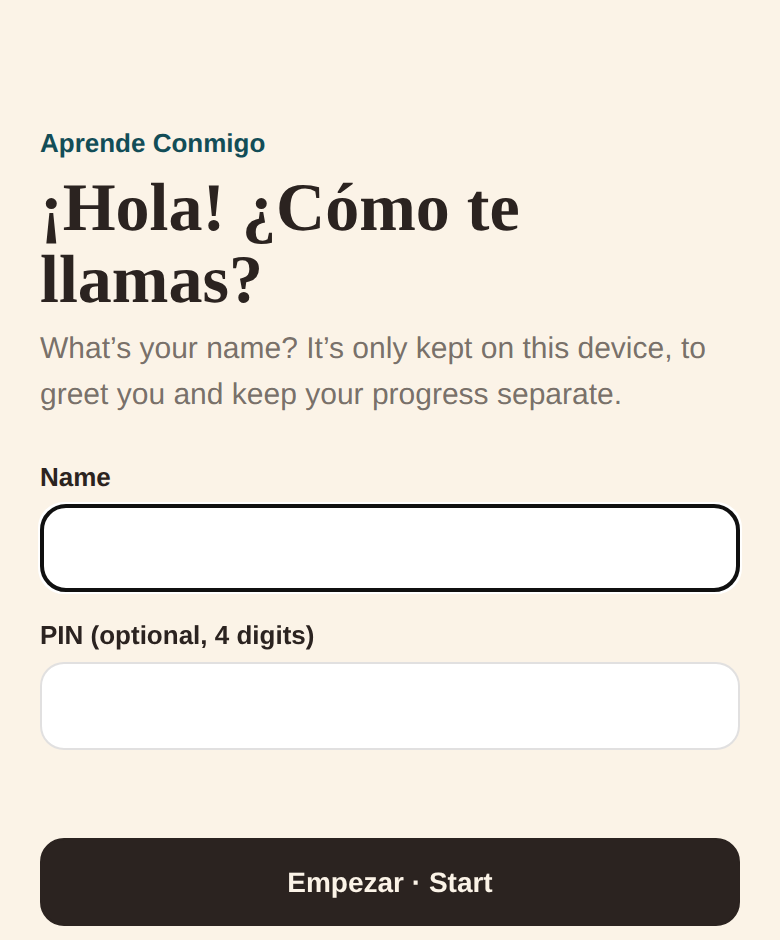
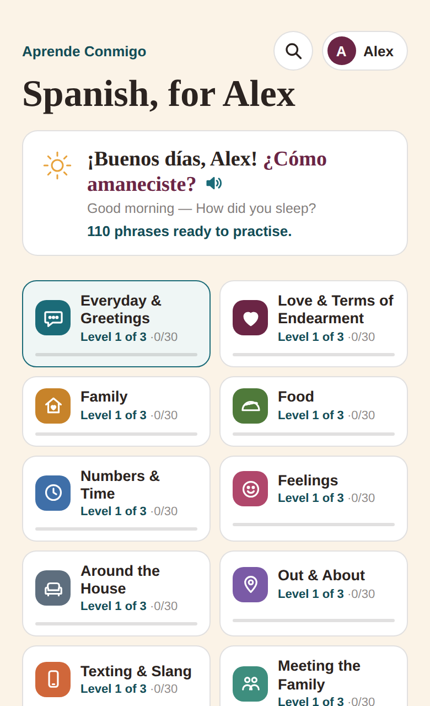
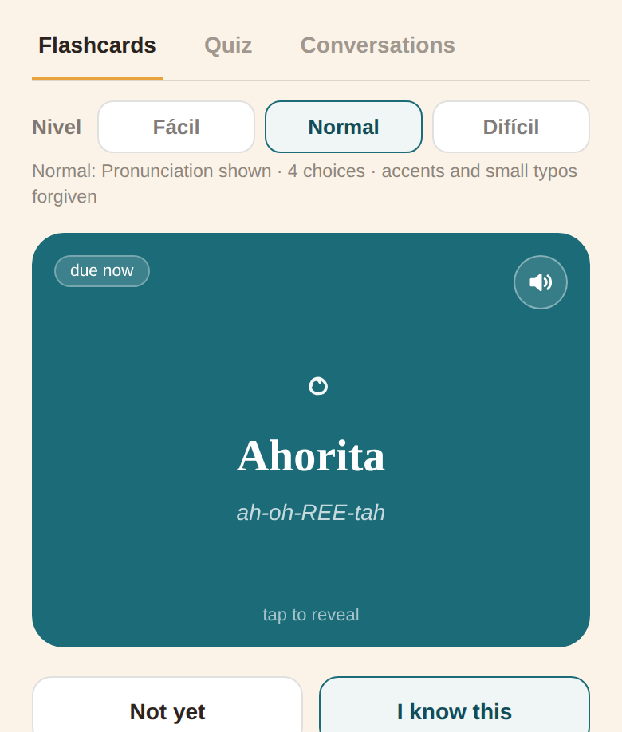
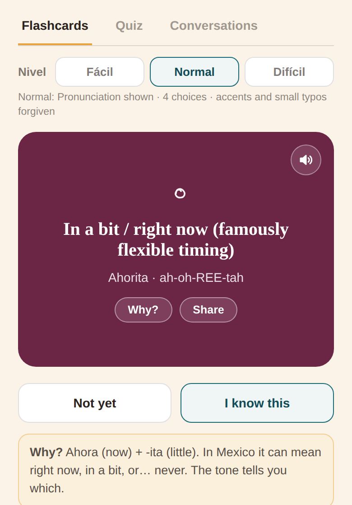
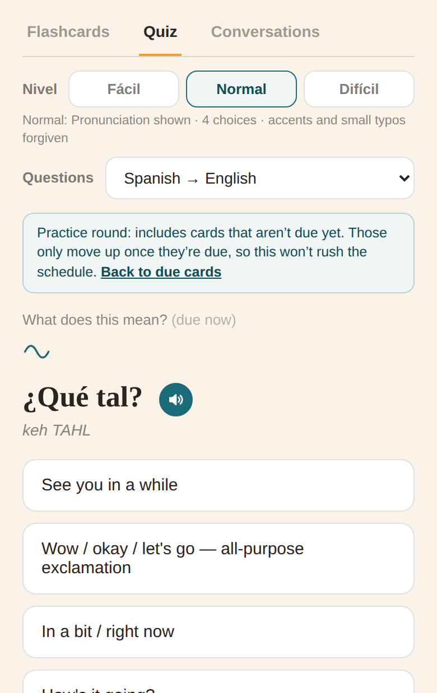
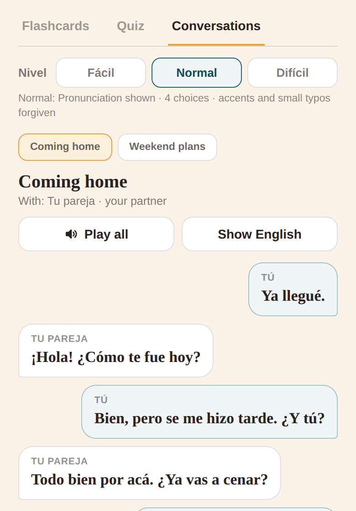
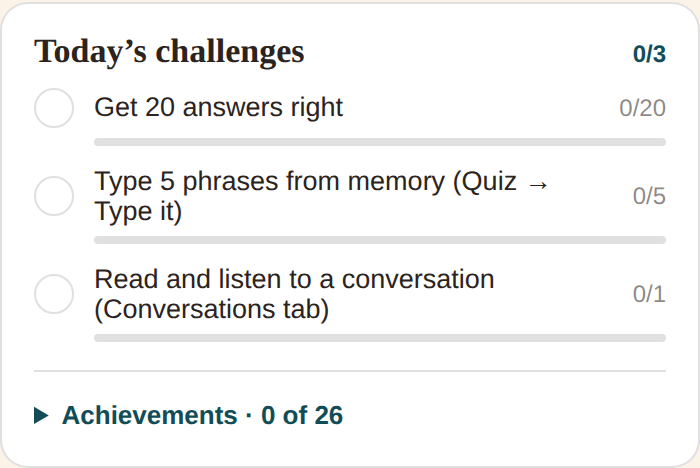
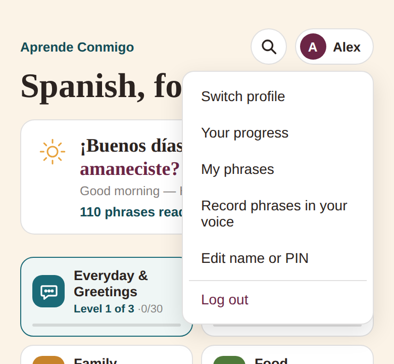

Aprende Conmigo is a free app for learning real, everyday Mexican Spanish — 330 phrases in 11 topics, from “¿Qué onda?” to meeting the in-laws. It brings each phrase back just before you’d forget it, so a few minutes a day really adds up.
There’s nothing to download from an app store. You add the website to your Home Screen and it then works like an app — full screen, with its own icon, and even without a connection.
Tap the ⋮ menu (top right) and choose Add to Home screen or Install app.
Open it from the new Aprende icon.
Computer
Just open the link in any browser and bookmark it.
Always open it from the icon. Your progress is saved on the phone. On iPhone, the Home Screen app and Safari keep separate progress, so stick to the icon.
2. The first time you open it
The app asks “¡Hola! ¿Cómo te llamas?” — what’s your name? Type your first name so it can greet you.
You can also set a 4-digit PIN. It’s optional: only worth it if other people use the same phone and you don’t want them opening your profile by accident.
Tap Empezar · Start and you’re in.
Several people can share one phone: each gets their own profile, progress and streak. Your name and progress never leave the phone.

The welcome screen.
3. A daily session (5–10 minutes)

The title and greeting use your name. The greeting changes with the time of day and tells you how many phrases are ready — tap it to hear it.
Open the app. The greeting says how many phrases are ready to practise.
Pick a deck (topic) — start with Everyday & Greetings.
Go through the Flashcards until it says “All caught up”.
If you have time, do a Quiz or a Conversation.
Come back tomorrow — the phrases that need another look will be waiting.
How the app decides what to show: every time you get a phrase right, it waits longer before showing it again — 10 minutes, then a day, 3 days, a week, 2 weeks, a month, 3 months. Get it wrong and it comes back sooner. That’s why “All caught up” is a good thing: you’ve done today’s work.
Want more? On the “All caught up” screen, Practice anyway lets you go through the cards again. That extra practice won’t make them come back later than they should.
4. Flashcards

Front: the Spanish, and how to say it.

Back: the meaning, with Why? and Share.
Tap the card to flip it and see the meaning.
Speaker button — hear it said by a Mexican voice.
I know this — you got it. It’ll come back later.
Not yet — no problem; it comes round again soon, including later in the same session.
Why? — a short note on how the phrase works (for example, ahorita = ahora “now” + -ita “little”).
Share — send the phrase to someone by message or WhatsApp.
Be honest with “I know this”: the app works best when it knows what you really remember.
5. Decks and levels
There are 11 decks: Everyday & Greetings, Love & Terms of Endearment, Family, Food, Numbers & Time, Feelings, Around the House, Out & About, Texting & Slang, Meeting the Family, and Celebrations.
Each deck has three levels: Basics → Conversational → Natural & Slang (or Idioms). The next level unlocks 🔒 once you know every phrase in the current one — each phrase has to be right twice, at least 10 minutes apart, so it’s really in your memory. When a whole deck is done, an All button mixes all its phrases together.
6. Quiz

A quiz question. After you answer, it shows the right answer, its sound and a Why? note.
Tap Quiz for questions instead of cards. Leave Questions on Mixed and the questions get harder as you learn each phrase. Or pick one type:
Type
What you do
Spanish → English
Pick what the Spanish means.
English → Spanish
Pick the right Spanish.
Listening
Hear it (no text) and pick the meaning.
Type it
Type the Spanish yourself. Missing accents and small typos are forgiven.
Fill the gap
Choose the missing word.
Build the phrase
Tap the words in the right order.
What would you say?
Read a real-life situation, pick what you’d say.
Say it out loud
Say it into the microphone (works on some phones only).
Match the pairs
A quick timed game. It doesn’t affect when phrases come back.
No accent keys? No problem — type que tal for ¿Qué tal?. The app accepts it and shows you the proper spelling.
7. Difficulty (Nivel)
Above the cards, Nivel sets how hard things are. You can change it any time.
Fácil (easy)
Normal
Difícil (hard)
How to say it
shown
shown
hidden until the answer
Choices
3
4
5
Audio
slower
normal
natural speed
Typing
very forgiving
forgives accents and a small typo
accents and spelling must be right
Start on Fácil or Normal; move to Difícil when it feels too easy.
8. Conversations
The Conversations tab has short everyday dialogues for each deck, using phrases you’re learning — coming home, a phone call, ordering at a restaurant, meeting your mother-in-law…
Tap a line to hear it, or Play all.
Show English reveals the translations.
Try saying the Tú (you) lines out loud before you tap them.
Tap I’ve read it when you’re done.

Your lines are on the right.
9. Challenges, streaks and achievements
Below the cards you’ll find three new challenges every day — like “Get 20 answers right” or “Hear 5 phrases”. There are also 26 achievements to unlock (tap Achievements to see them).
The 🔥 day streak at the bottom counts the days in a row you’ve practised. Missing a day resets it — even one card counts!

Today’s challenges.
10. The menu — tap your name
Your progress
Your streak, a calendar of practice days, how far you are in each deck, and your trickiest phrases with a button to practise just those. At the bottom, Daily reminder adds a daily alert to your calendar.
My phrases
Add your own phrases — things you actually say at home. They get their own deck.
Record phrases in your voice
Record how you (or a Spanish-speaking friend) say a phrase; the speaker button then plays that instead of the phone’s voice.
Edit name or PIN
Change your name, or add, change or remove your PIN.
Switch profile / Log out
For shared phones. Each profile is kept separate: its own progress, streak, challenges, settings, My phrases and recordings. Log out means the next person picks their own profile.

The menu.
11. Search
Tap the magnifying glass at the top to find any phrase, in Spanish or English (accents optional). Tap a result to hear it, see how it works, share it, or Practise it right away.
12. Backups and moving to a new phone
Your progress lives on your phone only — there’s no account or cloud. To keep a backup, or move to a new phone:
At the very bottom of the app, tap Export progress, then Copy code.
Paste the code somewhere safe — a note, or a message to yourself.
On the new phone, install the app, create your profile, tap Import progress, paste the code and tap Apply.
Worth doing now and then. If the Home Screen app is deleted, or the phone’s website data for it is cleared, the progress goes with it. Your export code brings it all back.
13. Questions and fixes
There’s no sound.
Check the volume and that the iPhone isn’t on silent (the switch on the side). For a better Mexican voice on iPhone: Settings → Accessibility → Spoken Content → Voices → Spanish, and download a Spanish (Mexico) voice.
It opened but my progress is gone.
Make sure you opened it from the Home Screen icon, not a browser tab, and that you’re in the right profile (tap your name). If the app was deleted, use your export code (section 12).
I forgot my PIN.
It can’t be recovered — it only exists on the phone. On the PIN screen, “Forgot PIN?” lets you delete that profile and start again. (Importing an export code brings the progress back.)
How do I get the latest version?
It updates itself. If something looks old, close the app completely and open it again.
Does it work without internet?
Yes, once you’ve opened it online at least once.
“Say it out loud” doesn’t work.
Speech recognition isn’t available on every phone or browser. Allow the microphone if asked; otherwise use the other question types.
Dark mode?
It follows your phone’s own light/dark setting automatically.
Is anything sent anywhere?
No. Your name, PIN, progress and recordings stay on your phone. The only things that leave it are what you choose to Share or Export.